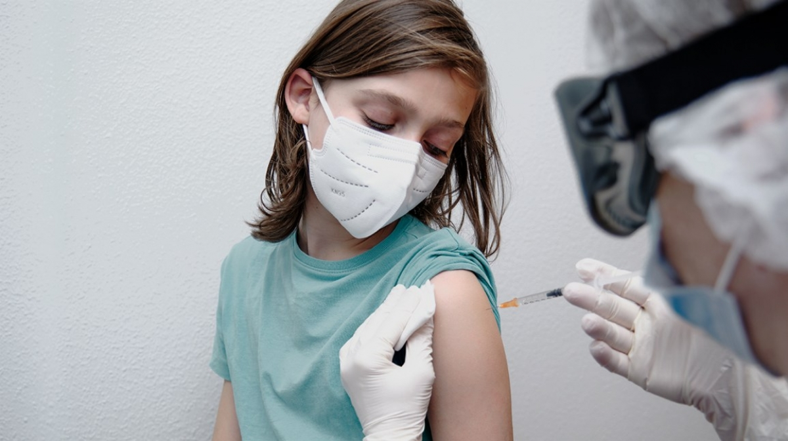

By Austinle | Dec 20, 2021 | Article
"The rate of COVID-19 infection, severity, and death in young children is very low compared to adults. But if an adverse reaction, especially anaphylaxis, affects the child's life, this is the trade-off is too great.
Therefore, preparation is extremely important if Ho Chi Minh City is allowed to vaccinate young children in the near future," - Doctor Nguyen Minh Tien, deputy director of the Children's Hospital of Ho Chi Minh City (HCMC), commented.
Which vaccines are suitable?
In the context that Ho Chi Minh City is implementing vaccination for children from 12 to 17 years old in the last days, the city's Department of Health said that the department and wards and communes have made detailed plans to propose to the Ministry of Health to vaccinate children. from 3 to under 12 years of age with appropriate vaccines. It is expected that in 2022, the city will deploy injections for this age group.
Before the above proposal, many parents in Ho Chi Minh City with children between the ages of 3 and 12 both wanted their children to soon have access to vaccines to go to school, but wondered which vaccine was appropriate and the dose. How much, is the rate of children having complications after injection high?
Sharing with Tuoi Tre, Mr. Nguyen Minh Tien said that since receiving this information, the hospital's switchboard has received many calls from parents asking whether the hospital organizes vaccination against COVID-19 for this group of children. or not. Most parents want to have their children vaccinated in the near future.
Dr. Tien said that some countries around the world, especially the US, have studied Pfizer's vaccines for children aged 5-11. Data from this study show that the safety and effectiveness of the vaccine for children through protective antibody concentrations, have not seen too adverse reactions, severe harm.
In addition, many other vaccines such as Moderna (USA), VeroCell (China), Abdala (Cuba)... have been studied for injection in young children.
"However, we must review and evaluate the effectiveness of research studies and have scientific evidence to decide which vaccines are appropriate, safe and effective for Vietnamese children," he said. Tien said.
Regarding the dose of vaccine to give to young children, Dr. Tien said that through studies around the world, compared with older children and adults, in young children, the dose of vaccine will be adjusted. Therefore, before administering vaccines to this age group, the Scientific Council of the health sector, the Ministry of Health needs to approve and give specific instructions for the vaccination campaign to ensure the safety and effectiveness of the vaccination campaign. to efficiency.
No hurry
Sharing about the upcoming vaccination plan for children aged 3-12 years old, Associate Professor Nguyen Huy Nga - former director of the Department of Preventive Medicine, Ministry of Health - cited the fact that children infected with COVID-19 are usually very mild, Very low morbidity and mortality rates. The vaccine coverage rate for people 12-17 years old, the higher the age 18 and older, the more children are protected.
According to Assoc. Russia, currently the World Health Organization (WHO) recommends not to rush to vaccinate children from 3 to 12 years old, instead continue to vaccinate people over 18 years old, especially poor countries, people with low income. high risk. When Vietnam has a good, safe and suitable vaccine for the general context (all localities have high coverage of vaccines for people over 18 years old), it is not too late to organize vaccination for children.
Mr. Nguyen Minh Tien also said that the vaccination campaign for young children should be considered as vaccination for other common diseases. However, it should be noted that the COVID-19 vaccine is a new vaccine, and the health sector needs to organize vaccination closely, especially focusing on post-injection monitoring.
Specifically, instead of older children and adults monitoring after injection within 2-3 days, young children need more time (at least 1 week) because of possible late complications such as myocarditis.
"Although myocarditis is very rare in older children, it can also occur in young children. This symptom usually occurs after the second injection, the rate is 7-15 cases / 1 million children" - Mr. Tien said.
Must ensure absolute safety
According to Doctor Nguyen Minh Tien, if the vaccination plan for young children is approved, the health sector needs to prepare for vaccination for young children to be absolutely safe from pre-injection screening, during vaccination. and post-injection monitoring.
Associate Professor Nguyen Huu Duc - former lecturer at the University of Medicine and Pharmacy in Ho Chi Minh City - also said that if a child is vaccinated against COVID-19 it is necessary to follow the principle that "children are not miniature adults" because vaccines also It is a drug but has a special effect on preventing diseases due to the production of immunity by helping to produce antibodies.
In order to ensure that children are vaccinated against COVID-19 at a safe and effective dose, according to Mr. Duc, clinical trials must be properly conducted and cannot be speculated on.
Ho Chi Minh City has injected about 532,000 children 12 - 17 years old
Information from the Center for Disease Control of Ho Chi Minh City on November 2 said that on November 1, the city had injected 111,993 people, bringing the total number of injections given since the city started organizing vaccination until January 1. 11 is more than 13.4 million, of which more than 5.7 million people get injection 2.
The rate of people over 18 years old who have received 1 injection is 99.4%; 79.5% is 79.5% who injects 2 full doses; people over 65 years old get 2 injections, 93.7%; people over 50 receive 2 injections is 93.8%.